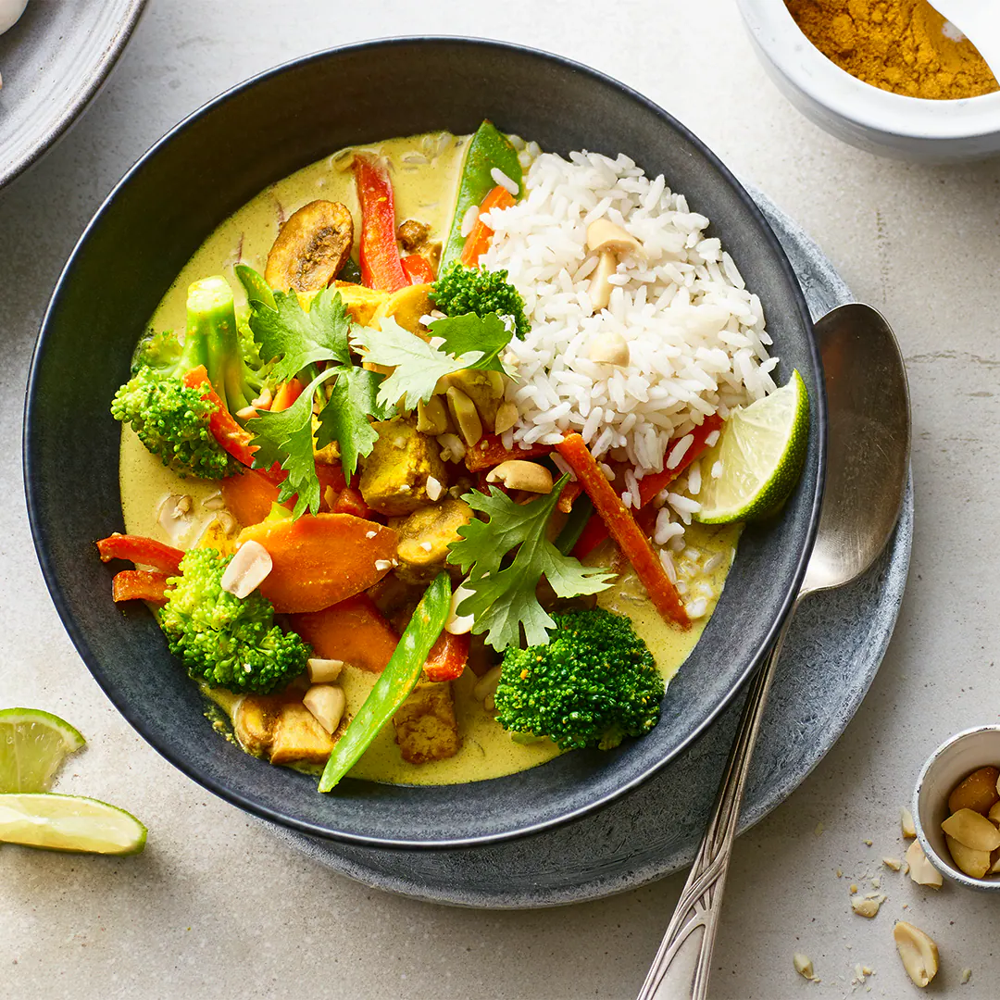

Vegetarische Rezepte
Kartoffelsalat

Ein leckeres Rezept für einen klassischen Kartoffelsalat. 2 kg Kartoffeln, festkochende 1 m.-große Zwiebel(n), feinst gewürfelte 250 ml Gemüsebrühe oder Geflügelbrühe 3 EL Weißweinessig, milder, z. B. Marc de Champagne 2 EL Dijonsenf mit grünem Pfeffer 200 g Mayonnaise, selbstgemachte oder wirklich gutes Fertigprodukt 6 kleine Gewürzgurke(n), fein geschnittene etwas Gurkenflüssigkeit
Vegane Rezepte
Avocado-Salat
Ein erfrischendes Rezept für einen köstlichen Avocado-Salat. 1 Avocado(s) 6 Kirschtomate(n) ½ Zwiebel(n) 1 kleine Gurke(n) 1 Paprikaschote(n), gelbe 60 g Feta-Käse 1 EL, gehäuft Pinienkerne Pfeffer, grober Meersalz etwas Zitronensaft etwas Schnittlauch Balsamicocreme 1 Prise(n) Zucker
Rezepte für Allesesser
Hähnchenbrust-Gemüse

Ein herzhaftes Rezept für Hähnchenbrust mit frischem Gemüse. 2 Stück(e) Hühnerbrust, frische 1 große Paprikaschote(n), (wahlweise gelb oder rot) 1 m.-große Zucchini 4 Frühlingszwiebel(n) 2 Zehe/n Knoblauch 350 ml Tomate(n), passierte 2 EL Tomatenmark 1 TL, gehäuft Zucker 1 TL, gehäuft Oregano 1 TL, gehäuft Thymian ½ TL Harissa ½ TL Paprikapulver, (Pimentón de la Vera, picante) etwas Salz etwas Pfeffer, frisch gemahlener schwarzer 125 g Käse, geriebener, nach Wunsch (junger Grana Trentino, Büffelmorzarella)